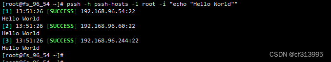
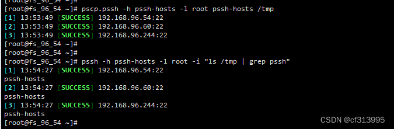
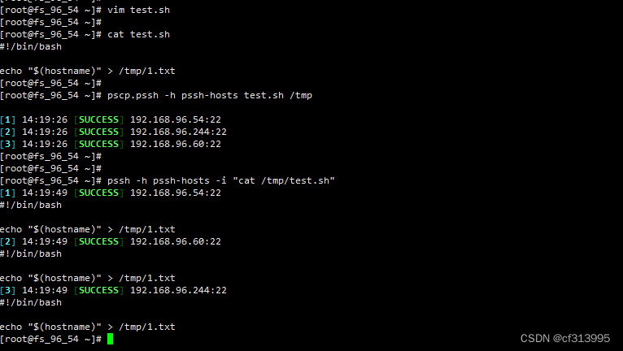
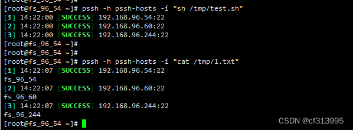
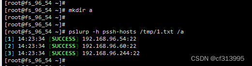
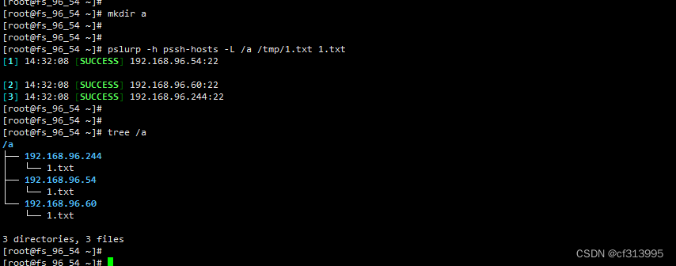
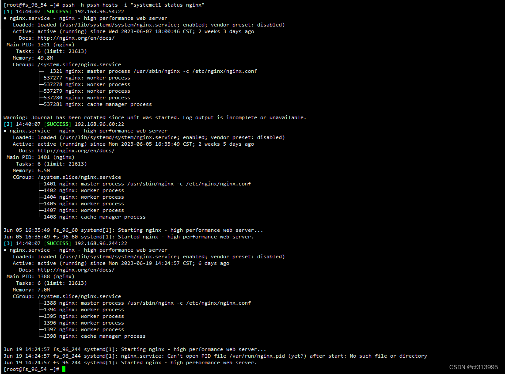
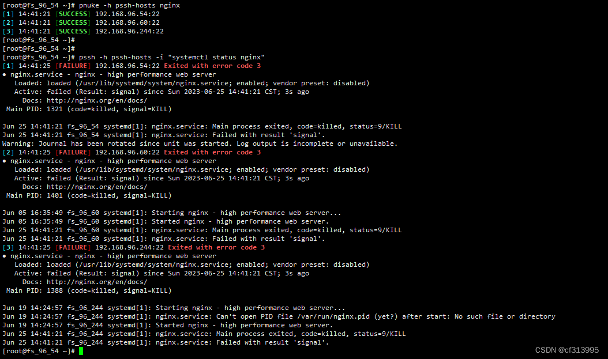

自动化工具pssh和ansible¶
参考文档
在多台服务器上运行相同命令(一)、pssh、ansible、自定义脚本-CSDN博客
文章目录¶
PSSH¶
全称是parallel-ssh，基于Python编写的并发在多台服务器上批量执行命令的工具。包括pssh，pscp，prsync，pnuke和pslurp。该项目包括psshlib，可以在自定义应用程序中使用。它相当于ansible的简化版，执行起来速度比ansible快，支持文件并行复制，远程命令执行，杀掉远程主机上的进程，杀手锏是文件并行复制。
主要用法：
pssh命令 在远程主机上执行本地命令或者脚本
pscp命令 将本地文件拷贝至多个远端主机
pslurp命令 从多台远程机器拷贝文件到本地
pnuke命令 在远端主机杀进程
prsync命令 使用rsync协议从本地计算机同步到远程主机
测试环境背景
A：centos7 192.168.227.140
B：centos7 192.168.227.148
C：debian12 192.168.227.142
安装¶
首先在A机器上安装pssh
yum install epel-release
yum install pssh
使用¶
(1)、定义一个文件，写入需要操作的机器，如pssh-hosts¶
vim pssh-hosts
然后写入需要控制的机器
192.168.227.148:22
192.168.227.142:22
(2)、pssh执行命令¶
pssh -h pssh-hosts -l root -i "echo "Hello World""
# 因为已经是互信环境，所以不需要输入密码
[root@localhost ~]# pssh -h pssh-hosts -l root -i "ls"
[1] 15:46:52 [SUCCESS] 192.168.227.148:22
anaconda-ks.cfg
kernel-lt-5.4.278-1.el7.elrepo.x86_64.rpm
[2] 15:46:52 [SUCCESS] 192.168.227.142:22
kejilion.sh
pass-hosts
[root@localhost ~]#

(3)、参数含义¶
-h -–hosts 主机文件列表，内容格式[user@]host[:port]
-l -–user 登录使用的用户名
-p -–par 并发的线程数【可选】
-t --timeout 超时时间【可选】
-v --verbose 输出详细信息【可选】
仅包含在pslurp里的
-L --localdir 下载文件的保存目录
(4)、pscp从96.54拷贝文件到其他机器¶
pscp.pssh -h pssh-hosts -l root pssh-hosts /tmp
# 拷贝pssh-hosts文件到其他机器的/tmp目录
# pscp从本地拷贝到远程，所以先写本地的某个文件或目录，再写远程的目录
[root@localhost /]# pscp.pssh -h /root/pssh-hosts -l root /2.txt /opt/
[1] 16:01:13 [SUCCESS] 192.168.227.148:22
[2] 16:01:13 [SUCCESS] 192.168.227.142:22
[root@localhost /]#

(5)、pslurp从其它机器下载文件到本地¶
例如，先创建一个脚本，并将其传入到每个机器上，获取每个机器的hostname并写入到一个文件，然后将每个机器上的该文件下载到本地。
准备：

在使用pssh执行脚本后，将每个机器的hostname写入到本地的某个文件了

最后使用pslurp将其拷贝到本地的某个目录

pslurp -h pssh-hosts -L /a /tmp/1.txt 1.txt
# 将每个节点上的/tmp/1.txt下载到本地的a目录里
# pslurp从远程下载到远程，所以先写远程的某个文件或目录，再写本地的目录

(6)、pnuke 杀死远程主机上的进程¶
例如杀死每个机器的nginx进程
查看每个节点的nginx的状态

执行命令
pnuke -h pssh-hosts nginx
查看效果

(7)、prsync跟rsync使用差不多，略过。
更新: 2024-11-12 16:07:06
原文: https://www.yuque.com/xianzhou-eiffx/aklhoc/kvp8mxnm9a5q0lxg
评论
评论加载中…